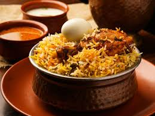

Double Ka Meetha
This is Hyderabad’s take on bread pudding. Made with fried bread, milk, sugar, dry fruits, and saffron — it’s sweet, soft, and royal!

HaleemA special dish during Ramzan. It’s a slow-cooked stew made from wheat, lentils, and meat. Rich, spicy, and super satisfying! |
|  |
Hyderabadi BiryaniThe crown jewel of Hyderabad! This rice dish is made with basmati rice, meat (usually chicken or mutton), saffron, and spices. It’s layered, slow-cooked, and full of flavor. |
Double Ka MeethaThis is Hyderabad’s take on bread pudding. Made with fried bread, milk, sugar, dry fruits, and saffron — it’s sweet, soft, and royal! |
|